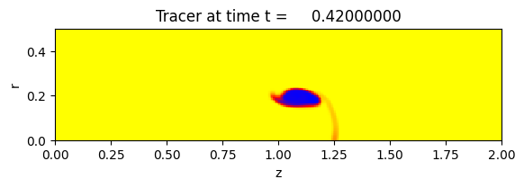

< < < Index > > >

Image source: /Users/rjl/clawpack_src/clawpack_master/pyclaw/examples/euler_2d/_plots/frame0007fig1.png
Other figures at this time: Density Tracer Energy All Figures
Other frames: 0 1 2 3 4 5 6 7 8 9 10 All Frames